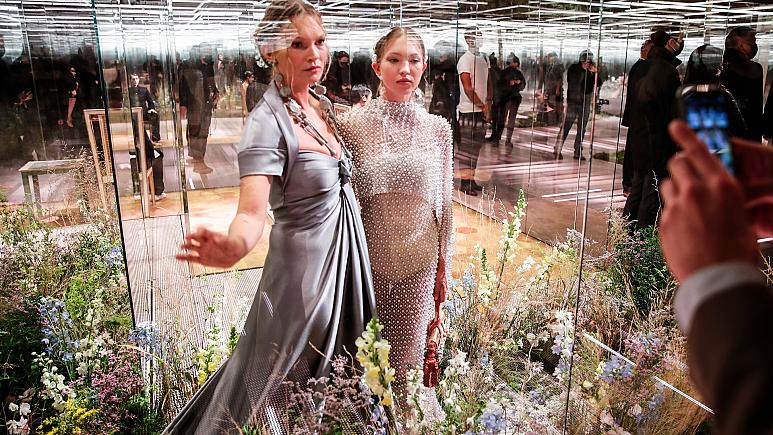

The school that rules Britain
A new memoir recalls life at Eton College – the school for the country's most powerful and
privileged. John Self looks at how it has captured writers' imaginations for decades.
A few miles down the road from Heathrow, Europe's busiest airport, lies Britain's most
famous
school. Eton College, a boys' boarding school in the town of Windsor on the western edge of
London, has captured the British imagination in films, books and TV for decades. Why should
this
be?
Is it because Eton is the crucible for generations of political leaders, with 20 of
Britain's 55 prime ministers educated there, including the first, Robert Walpole, and the
latest, Boris Johnson? This alone gives it a level of fame that is self-perpetuating. Or is
it the school's long history (it was founded almost 600 years ago), the price of an
education there (£42,500 or $58,000 a year), its traditions or even its uniform, for which
top hats were worn as recently as the 1960s and tail-coats still are?
Well, not everyone who attended Eton fits the mould. This month sees the publication of One
of Them: An Eton College Memoir by writer, podcaster and musician Musa Okwonga. When he
attended Eton from 1993 to 1998, Okwonga was one of only a handful of black boys at the
school. The book is his contribution to an "exploration of race and class" in Britain, on
the grounds that "to understand where we are going as a society, we need to understand how
we got here."
"I
thought, this is the kind of education that takes you anywhere" – Musa Okwonga
How African fashion has conquered film
A new exhibition explores the extraordinary work of Oscar-winning designer Ruth E Carter.
She speaks to Nadia Neophytou about Coming 2 America, Black Panther and Afrofuturism.
It's hard to overstate Ruth E Carter's achievement in costume design on Black Panther, even
now, three years after the film's release. She did, after all, win an Oscar for it. Not only
did a massive movie franchise like Marvel finally put a leading black superhero on screen,
but he was regally dressed too. As many pundits noted, the film marked a defining moment for
black America. But it was a moment that also reverberated throughout the world, not least on
the African continent itself, where the Basotho blankets and Ndebele neck-rings were
instantly recognised for the items of rich heritage they are. It was a moment of pride that
for so long had been denied to Africans portrayed on screen in Hollywood productions.
Ten of those Black Panther costumes – plus some from Coming 2 America – are included in an
exhibition dedicated to Carter's career at Atlanta's Scad Fash Museum of Fashion + Film. The
exhibition, titled Afrofuturism in Costume Design, is running until mid-September, and tells
the story of the 60-year-old's ascension as one of only two costume designers in history –
and the first black woman – to have a star on the Hollywood Walk of Fame. It's also the
story of how Carter has played a groundbreaking role in the way African fashion is seen.
Fashion industry evolves, as virus forces a rethink
The pandemic has torn a multibillion-dollar bite out of the fabric of Europe's fashion industry, stopped runway shows and forced brands to show their designs digitally instead. Now, amid hopes of a return to near-normality by the year’s end, the industry is asking what fashion will look like as it dusts itself off and struggles to its well-heeled feet again. Answers vary. Some think the Fashion Week format, in use since the 1940s, will be radically rethought. Others believe Asia will consolidate its huge gains in influence. Many see brands seeking greater sustainability to court a younger clientele. “The impact of the pandemic will be unquestionably to increase the importance and influence of Asia on fashion,” said Gildas Minvielle, economist at the Institut Francais de la Mode in Paris. “Luxury in Europe has already rebounded but it’s only because it’s globalised, only because of Asian buyers," Minvielle said. "They spent on European brands.”
Balkan Trafik Festival celebrates 15th anniversary with online programme
A festival celebrating Balkan culture will celebrate its 15th anniversary in a different fashion this year. The Balkan Trafik Festival, which is held annually in Brussels, will go online with streaming of music, cinema, debates and street art available. "Out of 10 groups, there were five that were able to come to Brussels. So I hired multi-camera teams to join those musicians in their countries, whether in Moldova, Kosovo, Serbia, or Bulgaria," Nicolas Wieërs, the festival's director, told Euronews. "The musicians I can bring to Brussels will perform in a super sound studio which has also multi-camera equipment," he added. This year there is also a mobile app available for people who want to follow the events. The festival has also changed in 15 years' time -- moving from a celebration of Balkan traditions to a focus on emerging talent. From April 21-25, there will be debates online as well as musical performances.